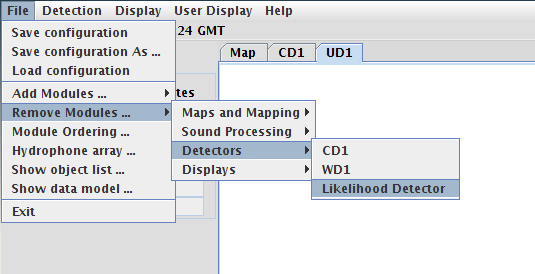

The Likelihood Detector Module
Removing a Likelihood Detector
To remove a Likelihood Detection module from the PAMGUARD system, select the
File->Remove Modules->Detectors menu item and select the name
of the Likelihood Detector to remove.
For more information on removing PAMGUARD modules, see the PAMGUARD help on
adding and removing
plugins.
Removing a Likelihood Detection Module
|

|